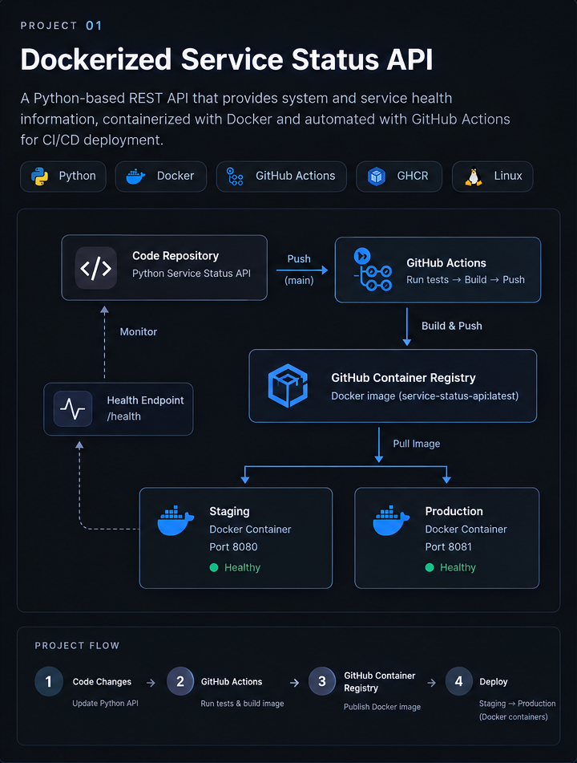
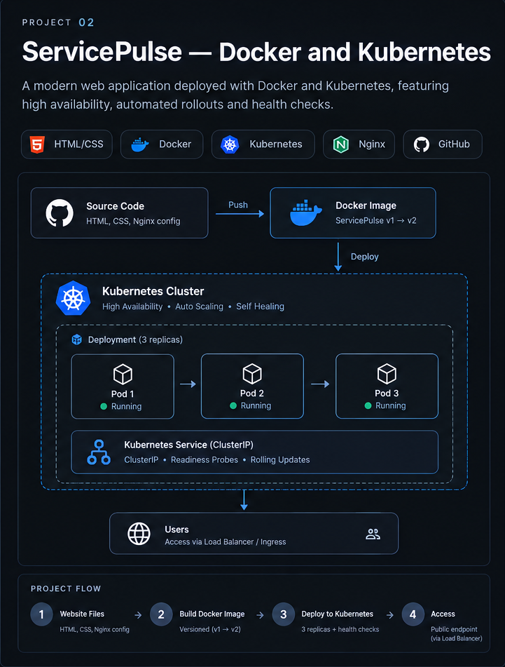

DEVOPS · CLOUD · AUTOMATION
Hi, I'm Suha Nasreen.
DevOps & Cloud Platform Analyst
I work across cloud infrastructure, CI/CD automation and data platform operations. I enjoy building practical projects that improve reliability, consistency and deployment workflows.
A LITTLE ABOUT ME
About Me
I'm DevOps & Cloud Engineer with 3+ years at Accenture, promoted to Analyst for consistently improving infrastructure reliability and CI/CD automation. Experienced across the full DevOps lifecycle, including provisioning and managing cloud infrastructure with Terraform, automating configuration with Ansible, and running containerized deployments with Docker and Kubernetes, across VMware infrastructure and Azure cloud. Comfortable owning problems end-to-end, from diagnosing root causes to building automation that removes recurring manual work.
MY PROFESSIONAL JOURNEY
Experience
Select a card to flip it and explore the role, project and tools.
TOOLS I WORK WITH
Technical Skills
Technologies used in my professional work and hands-on learning.
Cloud Platforms
Infrastructure as Code & Configuration
Containers & Orchestration
CI/CD & Automation
Monitoring & Observability
OS & Virtualization
Scripting & Automation
Data & Databases
ITSM & Collaboration
CONTINUOUS LEARNING
Certifications & Trainings
HashiCorp Terraform Practical Labs
Completed hands-on labs on Infrastructure as Code (IaC) using HashiCorp Terraform.
Practical trainingGoogle Cybersecurity Professional Certificate
Penetration testing and vulnerability assessment.
Certificate listed on resumeScientific Computing with Python — freeCodeCamp
Practical coursework covering Python programming, algorithms, data structures and automation principles.
CourseworkHANDS-ON WORK
Featured Projects
Practical projects built to develop and demonstrate DevOps skills.

Move cursor away to returnDockerize a Service Status API
Built a containerized Python status API with configurable staging and production environments, a non-root user and Docker health checks. GitHub Actions tests the application and publishes the image to GitHub Container Registry.
View on GitHub ↗
Move cursor away to returnServicePulse — Kubernetes Dashboard
Packaged a static operations dashboard as a versioned Docker image and deployed it to local Kubernetes using Deployment and Service YAML manifests. Practised scaling, self-healing after Pod deletion, health probes, resource limits and rolling updates.
View on GitHub ↗ACADEMIC BACKGROUND
Education
Bachelor of Commerce with Computer Applications
Bharathiar University · Nehru College of Arts and Science
Commerce with Computer Applications
Bharathamatha Higher Secondary School
LET'S CONNECT
Contact
Open to DevOps & Cloud Engineering opportunities, bringing hands-on experience in Azure, CI/CD, infrastructure automation, and containerization.